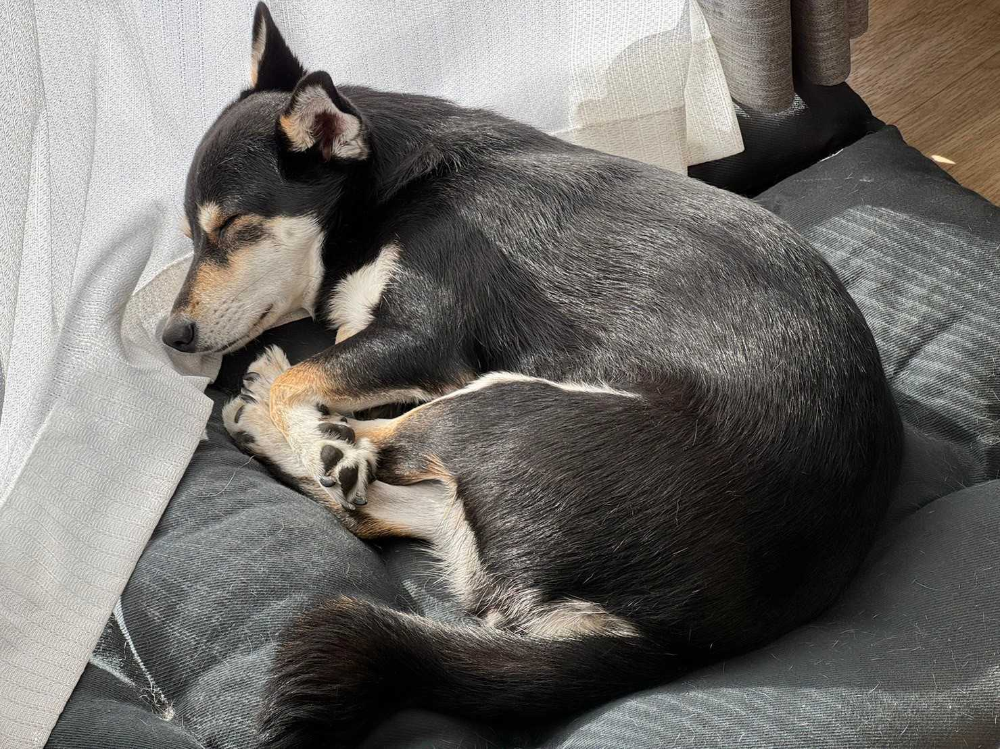

小野 遥 Haruka Ono

Assistant Staff, Biodiversity Conservation Planning Section,Institute for Environmental Studies (NIES), Japan
A member of Biodiversity conservation * Human behaviour change Team
moonoharuka (at) gmail.com
I’m interested in biodiversity conservation finance in private capital, such as the business sector!
Love for diversity, climbing, diving, design (graphic / user interface / marketing) and coffee
I’m an ally.
Publications
Peer-reviewed articles
- 寺田一貴、小野遥、大林花織、平早紀、佐藤弘人、朴炫貞 (2024) 五感を活用したオンラインサイエンスイベントにおける双方向コミュニケーションの実践 ～エネルギーを視聴覚で体感するコンテンツの有効性～, Journal of Science Communication, in press
[English title] Approaches and Practices for Mutual Communication in Online Science Events Using the Senses: The Effectiveness of Audio-visual Contents for Feeling Energy - Sawada A, Iwasaki T, Inoue C, Nakaoka K, Nakanishi T, Sawada J, Aso N, Nagai S, Ono H, Murakami R and Takagi M (2022) Estimation of condition dependent dispersal kernel with simple Bayesian regression analysis. Ornithological Science, 22, 25-34
- Murakami R, Sawada A, Ono H and Takagi M (2021) The effect of experience on parental role division in Ryukyu Scops Owl Otus elegans. Ornithological Science, 21, 35-44
- Sawada A, Iwasaki T, Inoue C, Nakaoka K, Nakanishi T, Sawada J, Aso N, Nagai S, Ono H and Takagi M (2021) Missing piece of top predator‐based conservation: Demographic analysis of an owl population on a remote subtropical island. Population Ecology, 63, 204-218
CV
Education / Career history
- 2015 - 2019: Division of Biology, Department of Biological Science, School of Science, Hokkaido University (B.S.)
- 2019 - 2021: Biodiversity Research Group, Department of Natural History Science, School of Science, Hokkaido University Graduate School of Science (M.S)
- 2021 - September 2023: MTI Ltd., Tokyo
- 2021 - 2022: Science Communicator Training Program Selective Course B (science event), CoSTEP, Hokkaido University
- September 2023 - Present: sole proprietorship as TSUKIHI design
- October 2023 - Present: Assistant Staff, Biodiversity Conservation Planning Section, National Institute for Environmental Studies (NIES), Japan
Grants
- 2019 - 2020: Bird Research Association, Research Support Project (Ono H)
- 2019 - 2020: Seven-Eleven Foundation, Environmental Civic Activity Grant (Sawada A & Ono H)
- 2019 - 2020: Tokyo Zoological Park Society Wildlife Conservation Fund (Sawada A, Murakami R, Ono H & Takagi M)
Outreach activities
- 2019: Ryukyu Scops Owl Lecture in Minami-daito Island, Okinawa, Japan
- 2020: “Understanding animal personality from Ryukyu Scops Owl”, Report Meeting on the Latest Topics in Birds, Hokkaido, Japan
学歴・職歴
- 2009 - 2015: 国立大学法人 奈良女子大学附属中等教育学校
- 2015 - 2019: 北海道大学理学部 生物科学科 生物学専修
- 2019 - 2021: 北海道大学大学院 理学院 自然史科学専攻（修士課程）
- 2021 - 2023/09: 株式会社エムティーアイにてデジタルマーケティング業務に従事
- 2021 - 2022: 北海道大学 CoSTEP 科学技術コミュニケーター養成プログラム 選科B 修了
- 2023/09 - 現在: TSUKIHI designとしてデザイン業で開業
- 2023/10 - 現在: 国立環境研究所 生物多様性領域 生物多様性保全計画研究室 アシスタントスタッフ
研究助成
- 2019年度: 認定NPO法人バードリサーチ 調査研究支援プロジェクト（個人）
- 2019年度: 一般財団法人 セブン-イレブン記念財団法人 環境市民活動助成（分担）
- 2019年度: 公益財団法人 東京動物園協会 野生生物保全基金（分担）